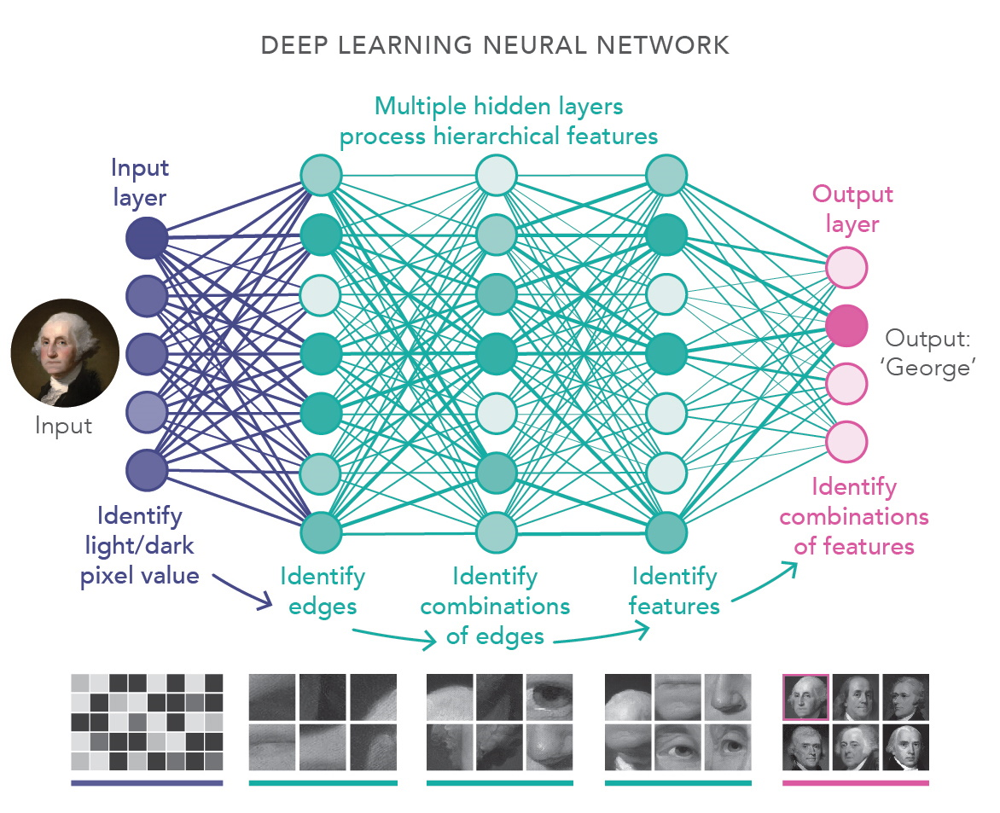

Machine Learning and Neural Networks
Thanks to massive arrays of Big Data and ultra-powerful graphic processing units (GPUs), multilayered neural networks accomplished unprecedented structural breakthroughs during the 2010s.
AI effectively learned how to perfectly evaluate graphical imagery, decode natural voice languages, and famously defeat human world champions in complex tactical board games like Go.